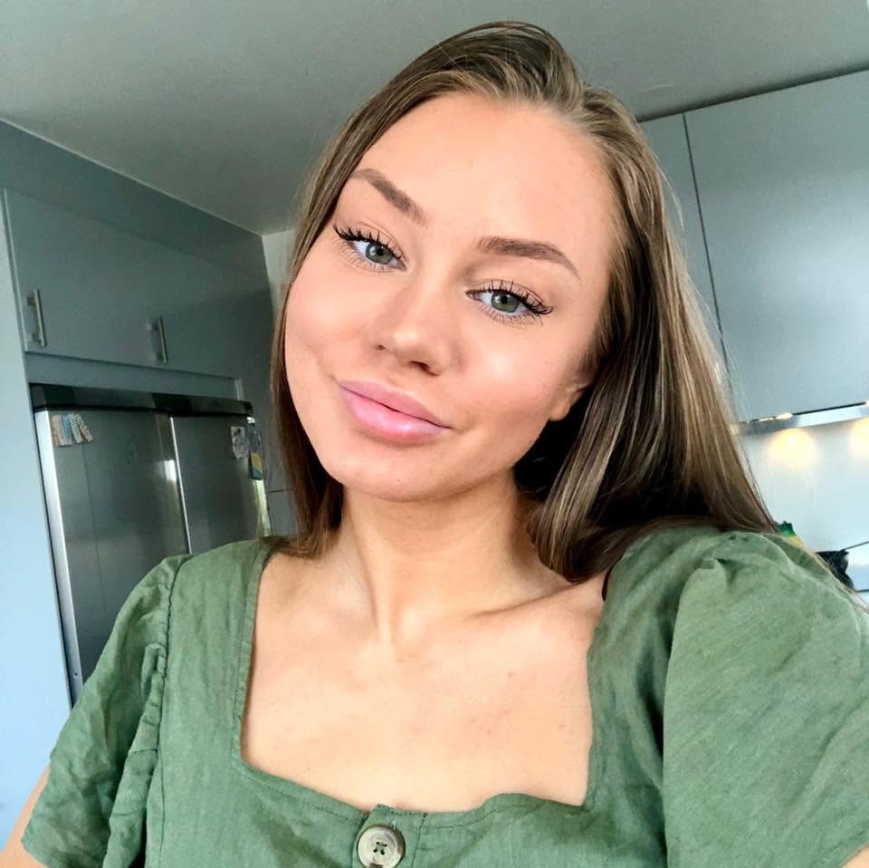

OM MIG
Video, content
& storytelling.
Jag gillar att hitta det som gör att människor stannar upp, fortsätter titta och faktiskt bryr sig om innehållet.

HEJ, JAG ÄR ANNA
Jag har själv fått testa vad som får människor att fortsätta titta.
Mitt intresse för video och content började mycket genom sociala medier och framför allt TikTok.
Jag byggde upp ett eget TikTok-konto från 0 till över 40 000 följare organiskt på ungefär ett år.
Under den resan fick jag lära mig mycket om vad som faktiskt får människor att stanna upp i flödet – hur man bygger en hook, berättar något på ett intressant sätt och håller kvar tittaren.
Det är erfarenheter som jag nu tar med mig in i mitt arbete med andra företags, kreatörers och experters videoinnehåll.
MITT SÄTT ATT JOBBA
Bra redigering handlar om mer än att klippa.
För mig handlar videoredigering inte bara om att klippa bort pauser och lägga på text.
Jag vill förstå vad videon försöker säga, vem som ska titta på den och varför någon skulle vilja fortsätta se den.
Därför lägger jag mycket fokus på urval, hooks, storytelling, struktur och tempo – utöver själva redigeringen.
Jag använder även AI som ett verktyg för att effektivisera delar av processen, men det kreativa urvalet och slutresultatet är alltid viktigt.
KONTAKT
Har du ett projekt i åtanke?
Hör gärna av dig om du vill prata video, content eller ett möjligt samarbete.
Kontakta mig